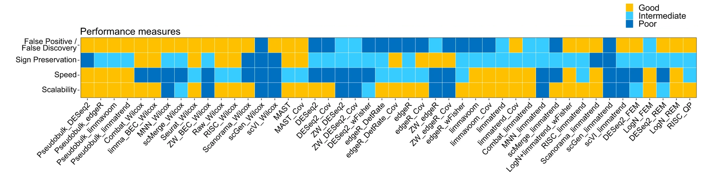

# September 2024
# HBC single-cell RNA-seq DGE workshop
# Single-cell RNA-seq analysis - compare DGE resultsComparing results from different DE approaches
Approximate time: 70 minutes
Learning Objectives:
- Compare and contrast results from
DESeq2andFindMarkers - Evaluate possible contributing factors for differing results
- Assess the relationship between percentage of cells and DE significance
Methods for differential gene expression in single cell RNA-seq
There are many approaches for identifying differentially expressed genes in single cell RNA-seq data. While the literature presents various methods, there still remains a lack of consensus regarding the best way forward. Choosing the appropriate method for your data requires a basic understanding of the system and structure of the data. Some of the important questions to ask include:
- Do you have enough cells to aggregate and do a pseudobulk analysis? Do you have enough power to run statistical tests?
- Are there smaller cell states within a celltype that would be lost after aggregating with a pseudobulk approach?
- Is there a latent variable that should be included in a design model?
- Are there biological replicates that can be used to control for variability in the data?
Exercises
- Take a moment and answer the above questions for our VSM cells dataset.
Another important aspect to consider is the amount of computational resources it takes to calculate differentially expressed genes. The number of computer cores and length of time needed can be a limiting factor in determining which methods are viable options. The general trends are that pseudobulk methods will use the least computational resources, followed by naive methods, with mixed models requiring the most computational resources. That being said, the amount of computational power will scale directly with the number of cells and samples in the dataset. As single-cell datasets begin to reach in the millions of cells, the usage of High Performance Computing clusters is necessary to run even the simplest of calculations, let alone a differential gene expression analysis.

Image credit: Nguyen et al, Nat Communications
Comparing results from different DGE approaches
So far in this workshop, we have made use of the DESeq2 and FindMarkers algorithms to find differentially expressed genes between the TN and cold7 sample groups. In this lesson, we compare and contrast results and use visualizations to see the practical implications of the questions outlined in the beginning of the lesson.
Let’s begin by creating a new Rscript called DE_comparison.R. At the top, add a commented header to indicate what this file is going to contain.
Next we will load the necessary libraries.
library(Seurat)
library(tidyverse)
library(ggvenn)
library(pheatmap)
library(cowplot)
library(dplyr)Volcano plots
In the previous lessons we had created a volcano plot for the results of DESeq2 analysis and FindMarkers analysis. Let’s plot them again but this time side-by-side.
p_deseq2 + p_fm
Can’t find these plot objects in your environment? Click here!
Note that this R code below uses existing objects in your environment created in earlier lessons.
# Volcano plot for Findmarkers results
p_fm <- EnhancedVolcano(dge_vsm_sig,
row.names(dge_vsm_sig),
x="avg_log2FC",
y="p_val_adj",
title="FindMarkers VSM cells",
subtitle="TN vs cold7")
# Volcano plot for Pseudobulk results
p_deseq2 <- EnhancedVolcano(sig_res,
sig_res$gene,
x="log2FoldChange",
y="padj",
title="DESeq2 VSM cells",
subtitle="TN vs cold7")
Visually, we see that there are more significant genes from the FindMarkers analysis. In order to best quantify the overlap and differences in methods, we can merge the results dataframes together. To do so, we will do some data wrangling to capture the most important information:
- Merge dataframes together
- Change column names to denote which method the results were generated from
- Remove unnecessary columns
- Create a new column titled
sigto identify if a gene was significant with an adjusted p-values < 0.05 using these labels: FindMarkers, DESeq2, both, or Not Significant
First, let us navigate to your environment and find the results objects from the the previous DESeq2 and FindMarkers lessons. You will need to find the following:
dge_vsm- which contains the full result from the FindMarkers analysisdge_deseq2- which contains the full result from the Pseudobulk analysis
Note
If you are having trouble locating these objects, you can also read the files in from your working directory:
dge_vsm <- read.csv("../results/findmarkers_vsm_cold7_vs_TN.csv")
# Make sure there is a column called gene
dge_vsm <- dplyr::rename(dge_vsm, c("gene"="X"))
dge_deseq2 <- read.csv("../results/deseq2_VSM_cold7_vs_TN.csv")Now, to the data wrangling to obtain our merged data frame:
# Merge FindMarkers and DESeq2 results together
dge <- merge(dge_vsm, dge_deseq2, by="gene")
# Rename columns to easily understand where results came from
# Remove columns we will not be using
dge <- dge %>%
dplyr::rename("padj_fm"="p_val_adj",
"padj_deseq2"="padj") %>%
dplyr::rename("log2FC_fm"="avg_log2FC",
"log2FC_deseq2"="log2FoldChange") %>%
dplyr::select(-c("p_val", "baseMean", "lfcSE", "pvalue"))
# Create a column called sig
# Identifies which methods a gene is significant in
dge <- mutate(dge, sig = case_when(
((padj_fm < 0.05) & (padj_deseq2 < 0.05)) ~ "both",
(padj_fm < 0.05) ~ "FindMarkers",
(padj_deseq2 < 0.05) ~ "DESeq2",
((padj_fm > 0.05) & (padj_deseq2 > 0.05)) ~ "Not Significant"))
dge %>% head() gene log2FC_fm pct.1 pct.2 padj_fm log2FC_deseq2 padj_deseq2
1 0610009B22Rik 0.4919641 0.238 0.138 6.745178e-07 0.178619741 0.5217744
2 0610009O20Rik 0.3421628 0.259 0.152 2.299513e-06 0.021075663 0.9539047
3 0610010K14Rik 0.3505411 0.163 0.088 1.093917e-05 -0.004912021 0.9819494
4 0610012D04Rik 1.1632519 0.033 0.010 3.048507e-03 0.610698014 0.1015138
5 0610012G03Rik 0.1019817 0.497 0.379 1.000000e+00 0.040974487 0.8935888
6 0610030E20Rik 0.6008081 0.147 0.077 6.292494e-06 0.058878725 0.8641972
sig
1 FindMarkers
2 FindMarkers
3 FindMarkers
4 FindMarkers
5 Not Significant
6 FindMarkersVenn diagrams
Let’s start with a quick look at overlapping genes between the two different approaches. We can represent the overlap of significant genes as a Venn diagram using ggvenn.
# Subset to significant genes
sig_fm <- dge %>% subset(sig %in% c("FindMarkers", "both"))
sig_deseq2 <- dge %>% subset(sig %in% c("DESeq2", "both"))
# Create list of significant gene names
sig_genes <- list(
FindMarkers = sig_fm$gene,
DESeq2 = sig_deseq2$gene
)
# Create Venn diagram
ggvenn(sig_genes, auto_scale = TRUE)
Barplot
Next, we can break that overlap into a barplot. The benefit of this visualization is that we can include the number of genes that were identified as not significant in both DESeq2 and FindMarkers. Here, we also categorize genes that are listed as NA, which is the result of DESeq2 filtering genes as was discussed earlier.
ggplot(dge, aes(x=sig, fill=sig)) +
geom_bar(stat="count", color="black") +
theme_classic() + NoLegend() +
theme(axis.text.x = element_text(angle=45, vjust=1, hjust=1)) +
labs(x="Significant", y="Number of genes") +
geom_label(vjust=-1, stat="count", aes(label=format(after_stat(count))))
Ultimately, we find ~1,200 genes significant from both DESeq2 and FindMarkers. The DESeq2 significant list is considerably smaller and so the overlapping genes make up a good proportion of the total. To explore some of the similarities and differences, let’s look at specific genes that demonstrate each of the following cases:
- Significant in only FindMarkers (Crebl2)
- Significant in only DESeq2 (Hist1h1d)
- Significant in both DESeq2 and FindMarkers (Tiparp)
Significant only in FindMarkers results
First, let us take a look at the expression values for the gene Crebl2, which was significant from the FindMakers analysis, but not DESeq2. We can begin by looking at the statistical results (adjusted p-value and LFC) for this gene:
dge %>% subset(gene == "Crebl2") gene log2FC_fm pct.1 pct.2 padj_fm log2FC_deseq2 padj_deseq2
2046 Crebl2 0.1004054 0.164 0.102 0.03277797 0.06293984 0.8488375
sig
2046 FindMarkersImmediately, we can see that there are fairly small percentage of cells that express the gene (pct.1 and pct.2) in both the cold7 and TN conditions. The LFC values are also on the lower end. To better understand what is happening at the expression level, we can visualize this gene at the single-cell level. We will use a violin plot and a ridge plot to evaluate the expression distribution for this gene in each condition.
p1 <- VlnPlot(seurat_vsm, "Crebl2", idents=c("cold7", "TN")) + NoLegend()
p2 <- RidgePlot(seurat_vsm, "Crebl2", idents=c("cold7", "TN")) + scale_x_log10()
p1 + p2
With the violin plot we can see that there is slightly higher expression in the TN condition. Similarly, the log10 scaled expression distribution represented as a ridge plot emphasizes that a small group of cells have similarly higher expression of Crebl2 across both conditions. By observing the expression at the single-cell level, we can possibly justify the significance call by FindMarkers.
To assess why DESeq2 did not evaluate Crebl2 as significantly different, we can take the normalized counts from the dds DESeq2 object to plot the expression at the pseudobulk level.
plot_pb_count(dds, "Crebl2")
After plotting expression for Crebl2, we can see that there is quite a bit of variability among the samples for both the TN and cold7 conditions. A qualitative assessment of the plot suggests that the within group varaiability is larger than the between group variability. This is a case where being unable to account for variability (as in FindMarkers) across replicates can skew the results.
Significant only in DESeq2
Next let’s explore Hist1h1d, a gene that was only identified as significant from the DESeq2 results. We can repeat some of the visualizations to look at the underlying expression and see if it is a believable difference. We can start by pulling the result stats for Hist1h1d from our merged dataframe:
dge %>% subset(gene == "Hist1h1d") gene log2FC_fm pct.1 pct.2 padj_fm log2FC_deseq2 padj_deseq2 sig
4099 Hist1h1d 3.085607 0.013 0.002 0.08019887 0.2272345 0.04911827 DESeq2Similar to before, we can see that very few cells are expressing this gene (even fewer than observed with Crebl2). The fold change is a bit higher than observed. Let’s take a look at the normalized expression values from pseudobulk to see if we can figure out why the DESeq2 algorithm identified this gene as significant.
plot_pb_count(dds, "Hist1h1d")
We can see that among the cold7 replicates, there is one sample expressing considerably higher expression in Hist1h1d. This sample is driving the observed fold change. Next, we can assess the expression of Hist1h1d at the single-cell level. From the ridge plot, we see that the TN plot is unimodal, but with cold7 it is bimodal with a tiny little hump on the right hand side of the plot. This represents a handful of cells that are expressing Hist1h1d at higher levels.
p1 <- VlnPlot(seurat_vsm, "Hist1h1d", idents=c("cold7", "TN")) + NoLegend()
p2 <- RidgePlot(seurat_vsm, "Hist1h1d", idents=c("cold7", "TN")) + scale_x_log10()
p1 + p2
Using this example, we can see how in the process of pseudobulk aggregation, high expression in a small proportion of cells can drive the results. At the single-cell level, we are better able to observe the true distribution of expression across all cells and rule out cases where only a few cells are expressing Hist1h1d.
High confidence genes: Significant in DESeq2 and FindMarkers
A conservative approach for a DGE analysis, would be to use only the significant genes that are identified from both methods. As an example, we can take a look at the gene Tiparp which was significant in DESEq2 and FindMarkers. Again, let’s begin with a quick peek at the results file. Unlike the previous genes, the percentage of cells expressing this gene is on the higher end.
dge %>% subset(gene == "Tiparp") gene log2FC_fm pct.1 pct.2 padj_fm log2FC_deseq2 padj_deseq2 sig
8768 Tiparp -2.414068 0.393 0.742 2.1504e-141 -2.378904 3.917121e-34 bothNext, we plot the normalized counts from pseudobulk aggregation. Here, we observe a clear difference in expression between groups. While there is some observed variability within the TN group, it is small compared to the varibility between groups. For this gene, it is clear why it was identified as significant.
plot_pb_count(dds, "Tiparp")
Now, let’s take a look at the expression values at the single cell level. Within the violin plot, we see there is a large distribution of cells in the TN group that show increased expression. The ridge plot displays a lower amplitude peak at the low end of expression and broad range across the higher end of expression. This suggests that while a small subset of cells exhibit low expression, a large majority express Tiparp at higher levels.
p1 <- VlnPlot(seurat_vsm, "Tiparp", idents=c("cold7", "TN")) + NoLegend()
p2 <- RidgePlot(seurat_vsm, "Tiparp", idents=c("cold7", "TN"))
p1 + p2
Effect of Percentage of cells on DGE
From the three examples provided above we observe a difference in the percentage of cells in which the gene is expressed. However, we handpicked the examples so it is not reasonable to jump to any conclusions about correlations between signifncance and percentage of cells. Since we have the data, we can plot it and assess if there is any observable trends.
Let’s start by filtering our data to keep only the genes that are significant in one or both of the methods:
# Remove non-significant genes
dge_sig <- dge %>% subset(sig != "Not Significant")Now, we’ll use that data to generate a scatter plot of the fold changes from FindMarkers on the y-axis and DESeq2 fold changes on the x-axis. Each data point represents a gene, and it is colored based on the percentage on cells expressed in TN (pct.1, right plot) or cold 7 (pct.2 left plot). We see a smear of light blue on the diagonal, which are the cells with the highest percentage of cells.
pct_1 <- ggplot(dge_sig %>% arrange(pct.1),
aes(x=log2FC_deseq2, y=log2FC_fm, color=pct.1)) +
geom_point() +
labs(x="DESeq2 LFC", y="FindMarkers LFC", title="Percentage TN") +
theme_classic()
pct_2 <- ggplot(dge_sig %>% arrange(pct.2),
aes(x=log2FC_deseq2, y=log2FC_fm, color=pct.2)) +
geom_point() +
labs(x="DESeq2 LFC", y="FindMarkers LFC", title="Percentage cold7") +
theme_classic()
pct_1 + pct_2
Now to really see if the percentage of cells is contributing to likelihood of being significant in both methods we need to color the data points. Let’s place these plots side-by-side:
# Color points by significance method
pct_3 <- ggplot(dge_sig %>% arrange(pct.1),
aes(x=log2FC_deseq2, y=log2FC_fm, color=sig)) +
geom_point() +
labs(x="DESeq2 LFC", y="FindMarkers LFC", title="Percentage TN") +
theme_classic()
pct_1 + pct_3
There is a smear of pink dots in the plot which line up pretty well with the smear of light blue, showing that a large proportion of the genes identified as significant by both methods are those which are expressed in a large percentage of cells. However, this is not the the rule as you can see a number of pink points that deviate from the diagonal - these are genes that exhibit fairly large changes and are significant in both methods yet are expressed in a small percentage of cells.
Finally, let’s make a heatmap of expression values using the normalized expression values from Pseudobulk and see if we can find any global patterns among the genes.
# Extract normalized expression for significant genes from the samples
normalized_counts <- counts(dds, normalized=T) %>% as.data.frame()
norm_sig <- normalized_counts %>%
dplyr::filter(row.names(normalized_counts) %in% dge_sig$gene)
# Create dataframe annotating rows (genes) and columns (samples)
anno_col <- colData(dds) %>% data.frame() %>% dplyr::select(condition)
anno_row <- dge_sig %>%
dplyr::select(gene, sig, pct.1, pct.2) %>%
remove_rownames() %>%
column_to_rownames("gene")
# Create heatmap
pheatmap(norm_sig,
show_rownames=FALSE,
show_colnames=FALSE,
annotation_row=anno_row,
annotation_col=anno_col,
scale="row")
Through this visualization, we can see that there is a a clustering of genes that are found significant by DESeq2 and FindMarkers, with some of the ‘both’ genes scattered. Most of the DESeq2 genes have a high percentage of cells expressing them, suggesting this drives the results observed with Pseudobulk.